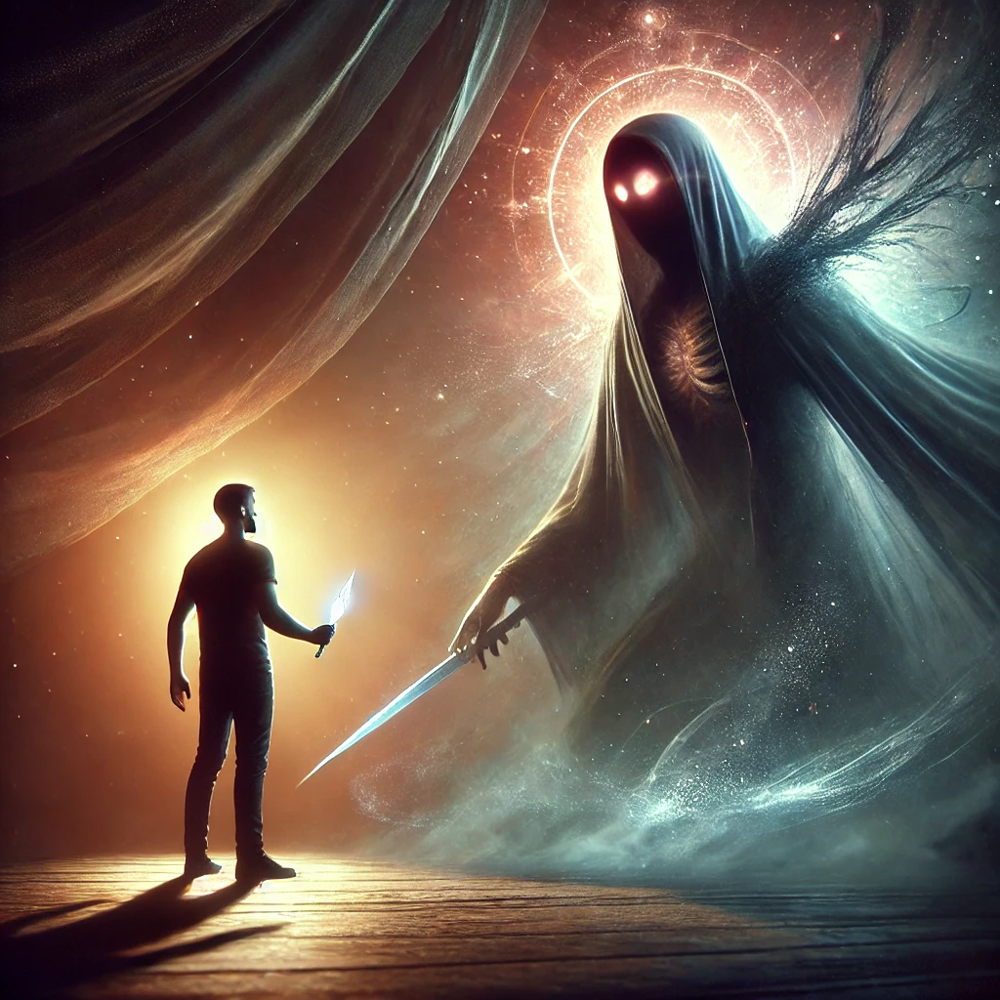

Instead of wielding the dagger, you lower it and step forward. The shadow watches you, its eyes gleaming with curiosity and malice. You meet its gaze, your voice steady despite the fear in your chest.
“Why do you haunt me?” you ask. The shadow’s form shifts, its edges softening as if your words unravel its power. For a moment, it hesitates, then speaks.
“I am the part of you that you bury,” it says, its voice a deep, resonant echo. “Your fear, your pain, your doubts. I do not haunt you—I am you. Why do you turn away from me?”

The shadow’s words strike a chord. What will you do next?